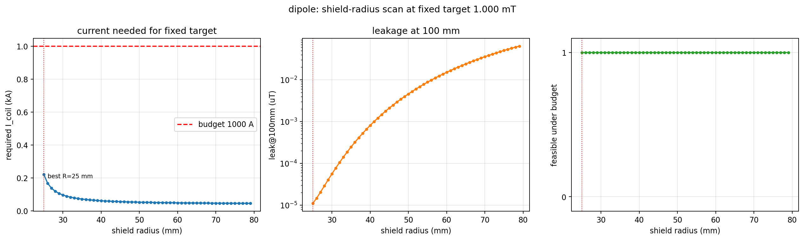

PSXM — Dipole Shield Radius Optimization
Two-Week Progress Report — 2026-07-28 to 2026-08-12
Jintian Wang
Group meeting (Node 5) · 2026-08-12
Design Question — Choosing the Shield Radius
Shield radius is a trade-off:
- Closer shield → better leakage cancellation, but absorbs more of the central field → higher coil current
- Farther shield → lower current, but more leakage escapes
Goal: find the shield radius that still meets the 1 mT dipole target within the 1000 A coil budget.
Result — Dipole Shield-Radius Scan
- Swept shield radius 25–79 mm at a 1 mT dipole target, 1000 A budget
- Optimum at the smallest scanned radius: R_sh = 25 mm, required current ≈ 222 A
- Required current decreases strictly monotonically with radius

Dipole shield-radius scan (required current, shield current, leakage)
Optimal Shield Radius
- The scan optimum sat at the lower edge → ask the precise question: with I_coil fixed at 1000 A (hardware cap), what is the minimum radius that still meets the target?
- Exact root: R_sh = 22.99 mm
- Only 0.49 mm outside the coil ring (22.5 mm) → mechanically infeasible
- Practical minimum: 23.5–24 mm
Conclusion
- Best shielding at the smallest feasible radius: R_sh ≈ 23.5–24 mm
- At R_sh = 25 mm the dipole needs only 222 A — far below the 1000 A cap
- The current budget is not the limiting factor; mechanical clearance is
← → arrow keys / click to navigate